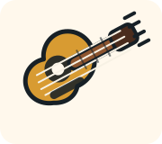

Use the lesson list on the left. Locked lessons open after you finish earlier ones.
Start Here

Learn bass one small step at a time
Bassline Rookie is a beginner bass coach for people who are starting from the basics. It teaches what the bass strings are called, where notes live on the fretboard, how to place your fingers, and how to turn those notes into simple grooves.
Start with the first unlocked lesson. Read the coach card, press Start test, then use the fretboard, answer buttons, rhythm tools, or microphone to complete the exercise. Your progress saves on this device.
Each lesson explains the skill first, then checks that you can use it.
Tap strings, frets, rhythm choices, or riff notes to build the habit slowly.
Turn the mic on when a lesson should listen for a real bass note.
Quick Guide
Look up technique, fretboard ideas, practice questions, rhythm terms, gear basics, or lessons.
Current Lesson
0 attempts
0 best streak
0% accuracy
No complete
Use the mic to hear a real bass note.
Raw mic level
0%